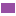

<!doctype html>
<html lang="en">
    <head>
        <meta charset="utf-8">
        <meta http-equiv="X-UA-Compatible" content="IE=edge">
        <meta name="viewport" content="initial-scale=1,user-scalable=no,maximum-scale=1,width=device-width">
        <meta name="mobile-web-app-capable" content="yes">
        <meta name="apple-mobile-web-app-capable" content="yes">
        <link rel="stylesheet" href="css/leaflet.css">
        <link rel="stylesheet" href="css/qgis2web.css"><link rel="stylesheet" href="css/fontawesome-all.min.css">
        <style>
        html, body, #map {
            width: 100%;
            height: 100%;
            padding: 0;
            margin: 0;
        }
        </style>
        <title></title>
    </head>
    <body>
        <div id="map">
        </div>
        <script src="js/qgis2web_expressions.js"></script>
        <script src="js/leaflet.js"></script>
        <script src="js/leaflet.rotatedMarker.js"></script>
        <script src="js/leaflet.pattern.js"></script>
        <script src="js/leaflet-hash.js"></script>
        <script src="js/Autolinker.min.js"></script>
        <script src="js/rbush.min.js"></script>
        <script src="js/labelgun.min.js"></script>
        <script src="js/labels.js"></script>
        <script src="data/SidewalksAll_1.js"></script>
        <script src="data/CrossingsAll_2.js"></script>
        <script src="data/KerbsAll_3.js"></script>
        <script>
        var m2px = 1;
        function newM2px() {
            var centerLatLng = map.getCenter();
            var pointC = map.latLngToContainerPoint(centerLatLng);
            var pointX = [pointC.x + 100, pointC.y];

            var latLngC = map.containerPointToLatLng(pointC);
            var latLngX = map.containerPointToLatLng(pointX);

            var distanceX = latLngC.distanceTo(latLngX)/100;

            reciprocal = 1 / distanceX;
            m2px = reciprocal;
        }
        function geoStyle(m) {
            return Math.ceil(m * m2px);
        }
        var highlightLayer;
        function highlightFeature(e) {
            highlightLayer = e.target;

            if (e.target.feature.geometry.type === 'LineString') {
              highlightLayer.setStyle({
                color: '#ffff00',
              });
            } else {
              highlightLayer.setStyle({
                fillColor: '#ffff00',
                fillOpacity: 1
              });
            }
        }
        var map = L.map('map', {
            zoomControl:true, maxZoom:28, minZoom:14
        }).fitBounds([[-25.47739171902684,-49.29751949785719],[-25.437468113592878,-49.21369750024127]]);
        var hash = new L.Hash(map);
        map.attributionControl.setPrefix('<a href="https://github.com/tomchadwin/qgis2web" target="_blank">qgis2web</a> &middot; <a href="https://leafletjs.com" title="A JS library for interactive maps">Leaflet</a> &middot; <a href="https://qgis.org">QGIS</a>');
        var autolinker = new Autolinker({truncate: {length: 30, location: 'smart'}});
        var bounds_group = new L.featureGroup([]);
        function setBounds() {
        }
        map.createPane('pane_BasemapCartoPositron_0');
        map.getPane('pane_BasemapCartoPositron_0').style.zIndex = 400;
        var layer_BasemapCartoPositron_0 = L.tileLayer('https://a.basemaps.cartocdn.com/light_all/{z}/{x}/{y}@2x.png', {
            pane: 'pane_BasemapCartoPositron_0',
            opacity: 1.0,
            attribution: '<a href="https://cartodb.com/basemaps/">Map tiles by CartoDB, under CC BY 3.0. Data by OpenStreetMap, under ODbL.</a>',
            minZoom: 14,
            maxZoom: 28,
            minNativeZoom: 0,
            maxNativeZoom: 20
        });
        layer_BasemapCartoPositron_0;
        map.addLayer(layer_BasemapCartoPositron_0);
        function pop_SidewalksAll_1(feature, layer) {
            layer.on({
                mouseout: function(e) {
                    for (i in e.target._eventParents) {
                        e.target._eventParents[i].resetStyle(e.target);
                    }
                },
                mouseover: highlightFeature,
            });
            var popupContent = '<table>\
                    <tr>\
                        <th scope="row">fid</th>\
                        <td>' + (feature.properties['fid'] !== null ? autolinker.link(feature.properties['fid'].toLocaleString()) : '') + '</td>\
                    </tr>\
                    <tr>\
                        <th scope="row">osmid</th>\
                        <td>' + (feature.properties['osmid'] !== null ? autolinker.link(feature.properties['osmid'].toLocaleString()) : '') + '</td>\
                    </tr>\
                    <tr>\
                        <th scope="row">footway</th>\
                        <td>' + (feature.properties['footway'] !== null ? autolinker.link(feature.properties['footway'].toLocaleString()) : '') + '</td>\
                    </tr>\
                </table>';
            layer.bindPopup(popupContent, {maxHeight: 400});
        }

        function style_SidewalksAll_1_0() {
            return {
                pane: 'pane_SidewalksAll_1',
                opacity: 1,
                color: 'rgba(152,78,163,1.0)',
                dashArray: '',
                lineCap: 'square',
                lineJoin: 'round',
                weight: geoStyle(4.0),
                fillOpacity: 0,
                interactive: true,
            }
        }
        map.createPane('pane_SidewalksAll_1');
        map.getPane('pane_SidewalksAll_1').style.zIndex = 401;
        map.getPane('pane_SidewalksAll_1').style['mix-blend-mode'] = 'normal';
        var layer_SidewalksAll_1 = new L.geoJson(json_SidewalksAll_1, {
            attribution: '',
            interactive: true,
            dataVar: 'json_SidewalksAll_1',
            layerName: 'layer_SidewalksAll_1',
            pane: 'pane_SidewalksAll_1',
            onEachFeature: pop_SidewalksAll_1,
            style: style_SidewalksAll_1_0,
        });
        bounds_group.addLayer(layer_SidewalksAll_1);
        map.addLayer(layer_SidewalksAll_1);
        function pop_CrossingsAll_2(feature, layer) {
            layer.on({
                mouseout: function(e) {
                    for (i in e.target._eventParents) {
                        e.target._eventParents[i].resetStyle(e.target);
                    }
                },
                mouseover: highlightFeature,
            });
            var popupContent = '<table>\
                    <tr>\
                        <th scope="row">fid</th>\
                        <td>' + (feature.properties['fid'] !== null ? autolinker.link(feature.properties['fid'].toLocaleString()) : '') + '</td>\
                    </tr>\
                    <tr>\
                        <th scope="row">osmid</th>\
                        <td>' + (feature.properties['osmid'] !== null ? autolinker.link(feature.properties['osmid'].toLocaleString()) : '') + '</td>\
                    </tr>\
                    <tr>\
                        <th scope="row">footway</th>\
                        <td>' + (feature.properties['footway'] !== null ? autolinker.link(feature.properties['footway'].toLocaleString()) : '') + '</td>\
                    </tr>\
                </table>';
            layer.bindPopup(popupContent, {maxHeight: 400});
        }

        function style_CrossingsAll_2_0() {
            return {
                pane: 'pane_CrossingsAll_2',
                opacity: 1,
                color: 'rgba(77,175,74,1.0)',
                dashArray: '',
                lineCap: 'square',
                lineJoin: 'bevel',
                weight: geoStyle(4.0),
                fillOpacity: 0,
                interactive: true,
            }
        }
        map.createPane('pane_CrossingsAll_2');
        map.getPane('pane_CrossingsAll_2').style.zIndex = 402;
        map.getPane('pane_CrossingsAll_2').style['mix-blend-mode'] = 'normal';
        var layer_CrossingsAll_2 = new L.geoJson(json_CrossingsAll_2, {
            attribution: '',
            interactive: true,
            dataVar: 'json_CrossingsAll_2',
            layerName: 'layer_CrossingsAll_2',
            pane: 'pane_CrossingsAll_2',
            onEachFeature: pop_CrossingsAll_2,
            style: style_CrossingsAll_2_0,
        });
        bounds_group.addLayer(layer_CrossingsAll_2);
        map.addLayer(layer_CrossingsAll_2);
        function pop_KerbsAll_3(feature, layer) {
            layer.on({
                mouseout: function(e) {
                    for (i in e.target._eventParents) {
                        e.target._eventParents[i].resetStyle(e.target);
                    }
                },
                mouseover: highlightFeature,
            });
            var popupContent = '<table>\
                    <tr>\
                        <th scope="row">fid</th>\
                        <td>' + (feature.properties['fid'] !== null ? autolinker.link(feature.properties['fid'].toLocaleString()) : '') + '</td>\
                    </tr>\
                    <tr>\
                        <th scope="row">osmid</th>\
                        <td>' + (feature.properties['osmid'] !== null ? autolinker.link(feature.properties['osmid'].toLocaleString()) : '') + '</td>\
                    </tr>\
                    <tr>\
                        <th scope="row">kerb</th>\
                        <td>' + (feature.properties['kerb'] !== null ? autolinker.link(feature.properties['kerb'].toLocaleString()) : '') + '</td>\
                    </tr>\
                    <tr>\
                        <th scope="row">wheelchair</th>\
                        <td>' + (feature.properties['wheelchair'] !== null ? autolinker.link(feature.properties['wheelchair'].toLocaleString()) : '') + '</td>\
                    </tr>\
                    <tr>\
                        <th scope="row">barrier</th>\
                        <td>' + (feature.properties['barrier'] !== null ? autolinker.link(feature.properties['barrier'].toLocaleString()) : '') + '</td>\
                    </tr>\
                    <tr>\
                        <th scope="row">tactile_paving</th>\
                        <td>' + (feature.properties['tactile_paving'] !== null ? autolinker.link(feature.properties['tactile_paving'].toLocaleString()) : '') + '</td>\
                    </tr>\
                    <tr>\
                        <th scope="row">surface</th>\
                        <td>' + (feature.properties['surface'] !== null ? autolinker.link(feature.properties['surface'].toLocaleString()) : '') + '</td>\
                    </tr>\
                    <tr>\
                        <th scope="row">kerb:height</th>\
                        <td>' + (feature.properties['kerb:height'] !== null ? autolinker.link(feature.properties['kerb:height'].toLocaleString()) : '') + '</td>\
                    </tr>\
                    <tr>\
                        <th scope="row">smoothness</th>\
                        <td>' + (feature.properties['smoothness'] !== null ? autolinker.link(feature.properties['smoothness'].toLocaleString()) : '') + '</td>\
                    </tr>\
                    <tr>\
                        <th scope="row">lit</th>\
                        <td>' + (feature.properties['lit'] !== null ? autolinker.link(feature.properties['lit'].toLocaleString()) : '') + '</td>\
                    </tr>\
                    <tr>\
                        <th scope="row">width</th>\
                        <td>' + (feature.properties['width'] !== null ? autolinker.link(feature.properties['width'].toLocaleString()) : '') + '</td>\
                    </tr>\
                </table>';
            layer.bindPopup(popupContent, {maxHeight: 400});
        }

        function style_KerbsAll_3_0() {
            return {
                pane: 'pane_KerbsAll_3',
                radius: geoStyle(3.0),
                opacity: 1,
                color: 'rgba(0,0,0,0.0)',
                dashArray: '',
                lineCap: 'butt',
                lineJoin: 'miter',
                weight: 2.0,
                fill: true,
                fillOpacity: 1,
                fillColor: 'rgba(0,0,0,0.5019607843137255)',
                interactive: true,
            }
        }
        map.createPane('pane_KerbsAll_3');
        map.getPane('pane_KerbsAll_3').style.zIndex = 403;
        map.getPane('pane_KerbsAll_3').style['mix-blend-mode'] = 'normal';
        var layer_KerbsAll_3 = new L.geoJson(json_KerbsAll_3, {
            attribution: '',
            interactive: true,
            dataVar: 'json_KerbsAll_3',
            layerName: 'layer_KerbsAll_3',
            pane: 'pane_KerbsAll_3',
            onEachFeature: pop_KerbsAll_3,
            pointToLayer: function (feature, latlng) {
                var context = {
                    feature: feature,
                    variables: {}
                };
                return L.circleMarker(latlng, style_KerbsAll_3_0(feature));
            },
        });
        bounds_group.addLayer(layer_KerbsAll_3);
        map.addLayer(layer_KerbsAll_3);
        var baseMaps = {};
        L.control.layers(baseMaps,{' Kerbs - All': layer_KerbsAll_3,' Crossings - All': layer_CrossingsAll_2,' Sidewalks - All': layer_SidewalksAll_1,"Basemap (Carto Positron)": layer_BasemapCartoPositron_0,},{collapsed:false}).addTo(map);
        setBounds();
        newM2px();

            layer_SidewalksAll_1.setStyle(style_SidewalksAll_1_0);
            layer_CrossingsAll_2.setStyle(style_CrossingsAll_2_0);
            layer_KerbsAll_3.setStyle(style_KerbsAll_3_0);
        map.on("zoomend", function(){
            newM2px();

            layer_SidewalksAll_1.setStyle(style_SidewalksAll_1_0);
            layer_CrossingsAll_2.setStyle(style_CrossingsAll_2_0);
            layer_KerbsAll_3.setStyle(style_KerbsAll_3_0);
        });
        </script>
    </body>
</html>
